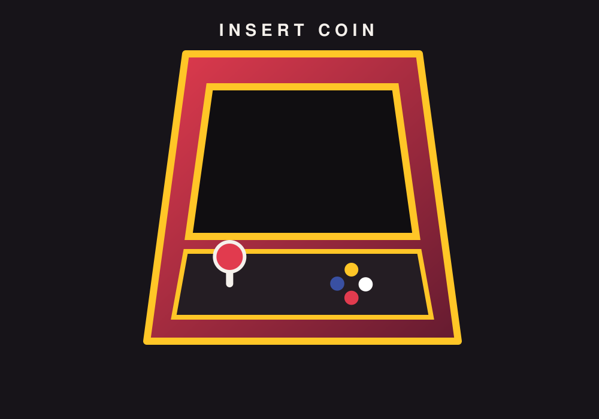

The Evolution of Video Games
L1–L2 · 01 / THE FIRST HIGH SCORES
The arcade beginning
L5 · CLIPPED FEATURE IMAGE

Video games did not begin with enormous maps, realistic characters, or online worlds. Their early appeal came from something much smaller: a screen, a few controls, and a challenge that anyone could understand. In the 1970s and 1980s, arcade machines helped make electronic games a public activity. Players visited malls, restaurants, and dedicated arcades to try a game, beat a score, and see their initials at the top of a leaderboard.
Games such as Pong and Pac-Man showed how simple rules could create memorable experiences. A player did not need a long tutorial to understand the goal. The challenge came from timing, pattern recognition, and improving with practice. The arcade format also made play social. Friends could take turns, watch one another, and compete for the next high score.
02 / THE LIVING ROOM
Games come home
As home consoles became more common, video games moved from public spaces into family rooms and bedrooms. Systems from companies such as Nintendo and Sega gave people a way to play without traveling to an arcade. Instead of paying for every round, players could return to the same game whenever they wanted. The living room became a place to practice, explore, and share a controller.
Home systems also encouraged longer experiences. Platform games, adventures, sports titles, and role-playing games could offer levels, characters, and stories that unfolded over time. A game could become something a player returned to over several evenings rather than a quick challenge between errands. Save systems made that longer relationship easier by allowing progress to continue later.
L3–L4 · POSITIONED OVERLAP / LAYER“I'm most impressed with the games that have created what appears to be a full, living, breathing world.”
— Tim Sweeney, founder and CEO of Epic Games, in conversation with Lex Fridman on Lex Fridman Podcast #467 (2025), discussing what makes great video games.
03 / CONNECTED PLAY
The online shift
When internet connections became a regular part of gaming, the experience expanded beyond the people sitting in the same room. Online multiplayer allowed friends and strangers to play together across cities and countries. Competitive games created teams, rankings, and tournaments, while cooperative games gave players shared goals that depended on communication.
Online play also changed how games were maintained. Developers could release updates, fix problems, add maps, and introduce new content after a game reached players. A game was no longer always a finished product that stayed exactly the same. It could change over months or years as its community grew and developers responded to feedback.
04 / MANY WAYS TO PLAY
A world of choices
L5 · SHAPE-OUTSIDE EDITORIAL WRAP
Today, video games are available on consoles, personal computers, phones, handheld devices, and through cloud-based services. Players can choose a short puzzle, a competitive match, a large open-world adventure, or a creative building game. This range makes gaming less like one activity and more like a collection of different hobbies that share interactive technology.
Visual design has also become more varied. Some games aim for realistic lighting and detailed environments. Others use pixel art, hand-drawn animation, or deliberately simple shapes. Better hardware gives developers more options, but visual complexity is not the only measure of quality. A clear idea, satisfying controls, thoughtful sound, and an interesting world can matter just as much as technical detail.
05 / THE NEXT LEVEL
What comes next
New technology will keep changing how games are made and experienced, but the future is not simply a race toward more realistic graphics. Virtual reality can place players inside a scene, while augmented reality can combine digital objects with physical surroundings. Accessibility tools, adaptive controllers, subtitles, and adjustable difficulty can also make games easier for more people to enjoy.
Looking back, the history of video games is a story of expanding possibilities. The arcade made electronic play public. Home consoles made it part of everyday life. The internet connected players, and modern platforms made games available in countless forms. Technology will continue to change, but the central attraction remains recognizable: games invite people to take part, make choices, solve problems, and share experiences. From a handful of pixels to virtual worlds, the screen has become a place where play keeps evolving.
L6 · DOCUMENTATION & TESTING